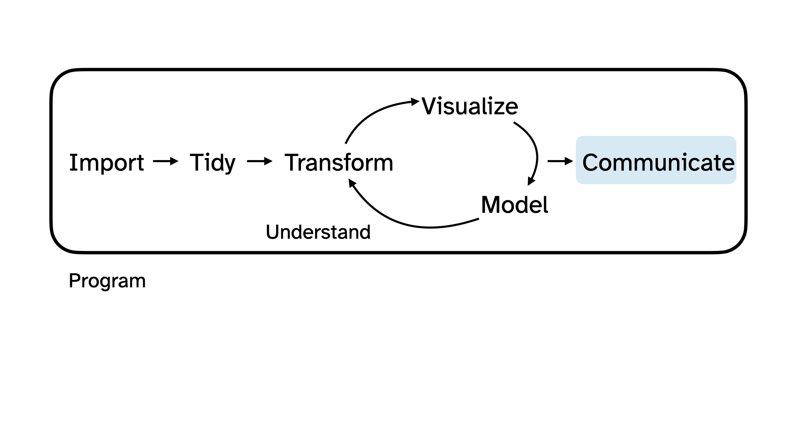

Welcome to STA 199
Lecture 0
Hello world!
Meet the prof
Dr. Mine Çetinkaya-Rundel
Professor of the Practice
Old Chem 213

Meet the course team
- Mary Knox (Course coordinator)
- Marie Neubrander (Head TA)
- Federico Arboleda
- Jaekyoung Kim
- Lynn Kremers
- Netra Mittal
- Grace Rade
- Jasmine Wang
- Emily Jensen
- Jonathan Lin
- Mengqi Liu
- Sonya Eason
- Domenic Fenoglio
- Sarah Wu
- Avery Hodges
- David King
- Hyunjin Lee
- Kareena Legare
- Liane Ma
- Noah Obuya
- Anmol Sapru
- John Zito
Meet each other!
Please share with at least two classmates…
- Your name
- Your year
- Where you’re from
- What you did this past summer
- What you hope to get out of this course
Meet data science
Data science is an exciting discipline that allows you to turn raw data into understanding, insight, and knowledge.
We’re going to learn to do this in a
tidyway – more on that later!This is a course on introduction to data science, with an emphasis on statistical thinking.
Application exercise
Or more like demo for today…
Data science life cycle
Data science life cycle
Collect birthdays
01:00
Import
Import birthdays
Tidy + transform

Tidy + transform birthdays
Visualize

Visualize birthdays
Model

Understand
Communicate

Understand + communicate

Program

Course overview
Homepage
- All course materials
- Links to Canvas, GitHub, RStudio containers, etc.
Course toolkit
All linked from the course website:
- GitHub organization: github.com/sta199-f24
- RStudio containers: cmgr.oit.duke.edu/containers
- Communication: Ed Discussion
- Assignment submission and feedback: Gradescope
Activities
- Introduce new content and prepare for lectures by watching the videos and completing the readings
- Attend and actively participate in lectures and labs, office hours, team meetings
- Practice applying statistical concepts and computing with application exercises during lecture, graded for attempting
- Put together what you’ve learned to analyze real-world data
- Lab assignments (7 or 8 throughout semester)
- Exams (midterm + final)
- Term project completed in teams
Application exercises
Daily-ish in lecture
“Graded” for attempt, not accuracy
Practice Weeks 1 + 2, graded thereafter
At least one commit by 2 pm of the day of lecture
Turn in at least 70% for full credit
Labs
Start in lab session
Complete at home
Due within a week
Discussion with classmates ok, copying not ok!
Lowest score dropped
Exams
Two exams, each 20%
Midterm comprised of two parts:
In-class (Oct 8): 75 minute in-class exam. Closed book, one sheet of notes (“cheat sheet”) – 70% of the grade.
Take-home (Oct 8 - Oct 11): Follow from the in class exam and focus on the analysis of a dataset introduced in the take home exam – 30% of the grade.
Final in-class only (Dec 12, 9am - 12pm): Closed book, one sheet of notes (“cheat sheet”).
“Cheat sheet”: No larger than 8 1/2 x 11, both sides, must be prepared by you.
Caution
Exam dates cannot be changed and no make-up exams will be given. If you can’t take the exams on these dates, you should drop this class.
Project
Dataset of your choice, method of your choice
Teamwork
Five milestones, interim deadline throughout semester
Final milestone: Presentation (video) and write-up
Presentations submitted as videos
Peer review between teams for content, peer evaluation within teams for contribution
Some lab sessions allocated to project progress
Caution
Project due date cannot be changed. You must complete the project to pass this class.
Teams
- Assigned by me
- Project
- Peer evaluation during teamwork and after completion
- Expectations and roles
- Everyone is expected to contribute equal effort
- Everyone is expected to understand all code turned in
- Individual contribution evaluated by peer evaluation, commits, etc.
Grading
| Category | Percentage |
|---|---|
| Application Exercises | 5% |
| Labs | 35% |
| Midterm | 20% |
| Final | 20% |
| Project | 20% |
No specific points allocated to attendance, but the application exercise score is implicitly tied to attendance.
See course syllabus for how the final letter grade will be determined.
Support
- Help from humans:
- Attend office hours
- Ask and answer questions on the discussion forum
- Help from AI: Use the course chatbot (in Canvas!)
- Reserve email for questions on personal matters and/or grades
- Read the course support page
Announcements
- Posted on Canvas (Announcements tool) and sent via email, be sure to check both regularly
- I’ll assume that you’ve read an announcement by the next “business” day
- I’ll (try my best to) send a weekly update announcement each Friday, outlining the plan for the following week and reminding you what you need to do to prepare, practice, and perform
Diversity + inclusion
It is my intent that students from all diverse backgrounds and perspectives be well-served by this course, that students’ learning needs be addressed both in and out of class, and that the diversity that the students bring to this class be viewed as a resource, strength and benefit.
- Fill out the Getting to know you survey.
- If you feel like your performance in the class is being impacted by your experiences outside of class, please don’t hesitate to come and talk with me. I want to be a resource for you. If you prefer to speak with someone outside of the course, your advisors, and deans are excellent resources.
- I (like many people) am still in the process of learning about diverse perspectives and identities. If something was said in class (by anyone) that made you feel uncomfortable, please talk to me about it.
Accessibility
The Student Disability Access Office (SDAO) is available to ensure that students are able to engage with their courses and related assignments.
I am committed to making all course materials accessible and I’m always learning how to do this better. If any course component is not accessible to you in any way, please don’t hesitate to let me know.
Course policies
Late work, waivers, lecture recordings, regrades…
- We have policies!
- Read about them on the course syllabus and refer back to them when you need it
Use of AI tools
AI tools for code:
- Sure, but be careful/critical! Working code
!=correct/good code. - Must explicitly cite, with at a minimum AI tool you’re using (e.g., ChatGPT) and your prompt.
- Sure, but be careful/critical! Working code
AI tools for narrative: Absolutely not!
AI tools for learning: Sure, but be careful/critical!
Academic integrity
To uphold the Duke Community Standard:
I will not lie, cheat, or steal in my academic endeavors;
I will conduct myself honorably in all my endeavors; and
I will act if the Standard is compromised.
Wrap up
This week’s tasks
- Complete Lab 0
- Computational setup
- Getting to know you survey
- Read the syllabus
- Complete readings and videos for next class
Midori says…